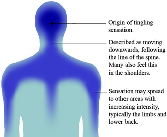

ASMR

An autonomous sensory meridian response (ASMR) is a tingling sensation
that usually begins on the scalp and moves down the back of the neck
and upper spine. A pleasant form of paresthesia, it has been
compared with auditory-tactile synesthesia and may overlap
with frisson. ASMR is a subjective experience of "low-grade
euphoria" characterized by "a combination of positive
feelings and a distinct static-like tingling sensation
on the skin". It is most commonly triggered by specific
auditory stimuli, and less commonly by intentional attention
control.
The term ASMR can also refer to media (usually audiovisual)
meant to evoke this phenomenon, with the sensation itself
being informally referred to as "tingles".
ASMR is usually precipitated by stimuli referred to as "triggers".
ASMR triggers, which are most commonly auditory and visual, may be
encountered through the interpersonal interactions of daily life.
Additionally, ASMR is often triggered by exposure to specific audio
and video. Such media may be specially made with the specific purpose
of triggering ASMR, or created for other purposes and later
discovered to be effective as a trigger.
Stimuli that can trigger ASMR, as reported by those who experience
it, include the following:
- Listening to a softly spoken or whispering voice
- Listening to a person blow or exhale into a microphone
- Listening to mouth sounds, such as quiet clicking of the tongue or
tisking
- Listening to tapping, typically with one's nails onto hard
surfaces
- Listening to buttons being pressed, mostly those of computer keyboards
or video game controllers
- Listening to quiet, repetitive sounds resulting from someone engaging
in a mundane task, such as turning the pages of a book
- Walking through a forest with a light wind blowing through the pines,
sometimes called Shinrin-yoku or "forest bathing".
- Watching somebody attentively execute a mundane task, such as
preparing food
- Receiving personal attention, such as having one's makeup applied,
hair styled, or a medical exam performed.
- Listening to the sound of rainfall
- Listening to "crinkly" items such as paper, clothes, and substances
such as styrofoam
- Listening to certain types of music.
A 2017 study of 130 survey respondents found that lower-pitched,
complex sounds, and slow-paced, detail-focused videos are especially
effective triggers.
ASMR | Emo Roleplay | Piercing Your Lip | Gum Chewing
bron
Integral to the subjective experience of ASMR is a localized
tingling sensation that many describe as similar to being gently
touched, but which is stimulated by watching and listening to
audiovisual media in the absence of any physical contact with
another person. These reports have precipitated comparison between
ASMR and synesthesia – a condition characterized by the excitation
of one sensory modality by stimuli that normally exclusively
stimulates another, such as when the hearing of a specific sound
induces the visualization of a distinct color, shape, or object
(a type of synesthesia called chromesthesia). Thereby, people with
other types of synesthesia report, for example, "seeing sounds" in
the case of auditory-visual synesthesia, or "tasting words" in the
case of lexical-gustatory synesthesia.
In the case of ASMR, many report the perception of "being touched"
by the sights and sounds presented on a video recording, comparable
to visual-tactile and auditory-tactile synesthesia.